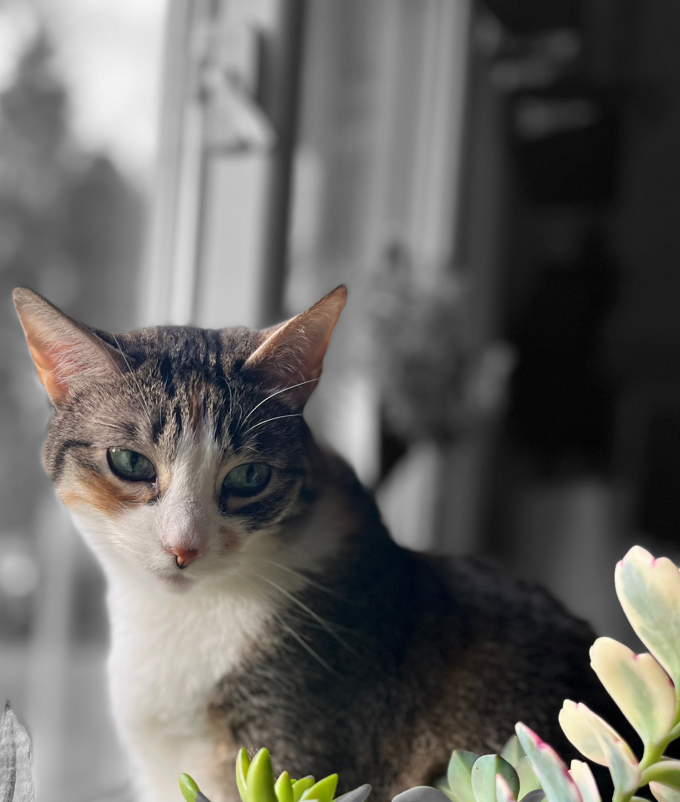
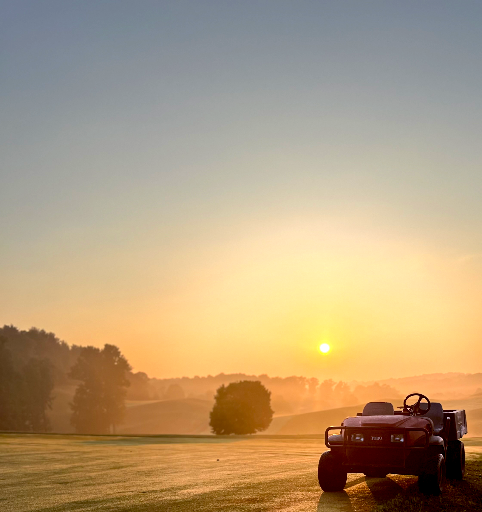

Cory Engle's Portfolio for AENG 110 Class
Photo Ptoject

Print Project
Photo Project
Video Project
Info Graphic Project

© 2024 Cory Engle
Cory Engle's Portfolio for AENG 110 Class |
||
Photo Ptoject | ||
|
| As this was the first picture in my portfolio for the photo project. I decided to experiment with the coloration and feeling of the image. I adjusted saturation to pull the warmth out of the sun reflecting off of the car. I also set the background to black and white to allude to nighttime approaching. |
Home Print Project Photo Project Video Project Info Graphic Project |
|  | This is an image of my cat Petunia. We call her Tuna for short but I figured the picture was very symbolic. Since her name is Petunia she posed as a flower lying in the daylite. I blurred the background so her features are the focal point of the image. This allowed for a very inviting vibe to the picture. | |
|  | This image was captured while I was working at my summer job. When I'm home for the summer months I work at a golf course outside of Reading Pennsylvania. The goal was to encapsulate the beauty of the rising sun. How distracting its beauty can really be. Although I had work to do I couldn't help but stop and admire it's warmth. | |
|
| My last addition to my collection was an abscure picture of a few cars in a parking lot. The goal of the image was to capture how others see car culture. To the viewer only small portions of the cars are visible. This is to show that most people don't get the full picture behind car culture. To people who are passionate about cars they can identify those cars based off of small details which mean nothing to a common viewer. | |
|
© 2024 Cory Engle | ||